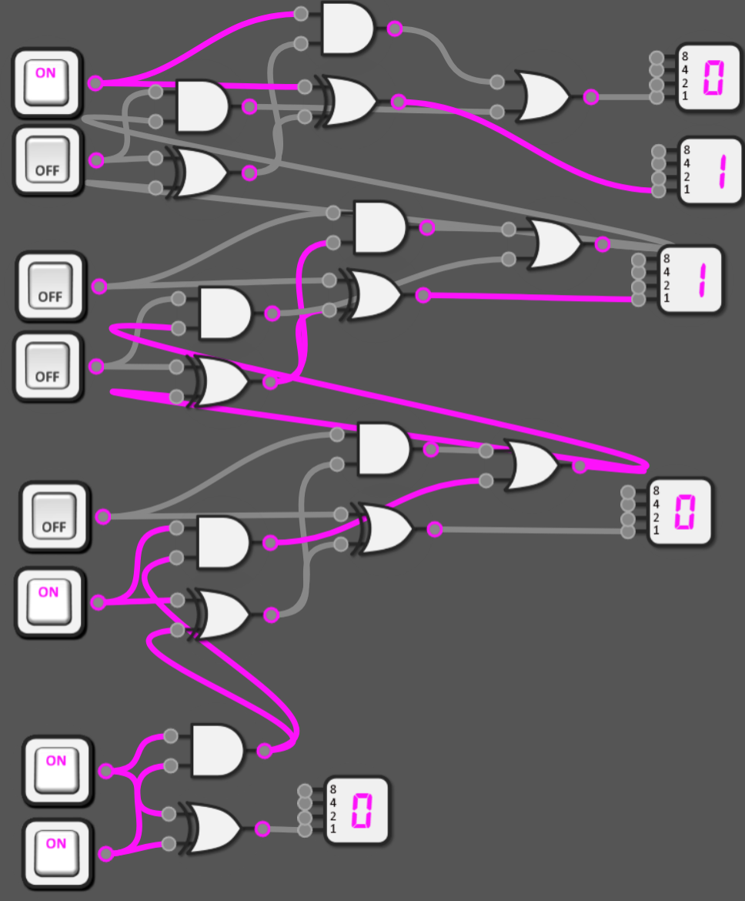
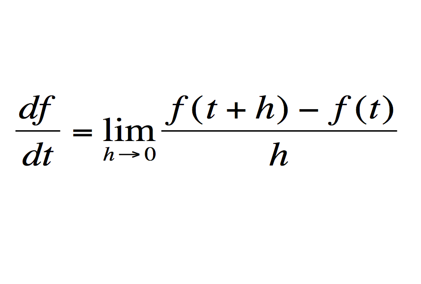

this is the standard page. should not be accessed. (or not)
i'm header level 1!
i'm header level 2!!
i'm header level 3!!!
another header level up to 4!
im lvl 5 but smths wrong.. uhhh...
dude why am i really small? i leveled up to 6?
i'm bolded
i'm important (italics)
i'm underlined
i'm useless
there's lots to do, just choose!
this is centered text.
part of having fun is choosing colors too.
list incoming (fix this)
- one item
- two item
- mine
shorthand code
local variable = "hey there"
print(variable + " this is multi-lined")
print(7 * 7)
here's an example image

proof header works anywhere
Let the following be defined under the context of mathematics given superscripts and subscripts.
If x2 = (d/dx)1/3x3, then theoretically x2 = (d/dx)-13x13.
Money Expenses
Note: Table was center-aligned manually.
| Groups | January | February | March |
|---|---|---|---|
| Warriors | $713.44 | $581.62 | $1,092.43 |
| Dragons | $77.61 | $32.98 | $509.64 |
Finally, here's a paragraph with an image too.
The derivative is a mathematical function used to take the slope of any function by utilizing the methodology of limits.

Taking the tangential slope of any point is rather difficult, so we use an estimation (limits) to fulfill this. Generally, the slope function (rise/run) is used, but the distance between 2 points under the run variable closes to 0 to get the exact slope.